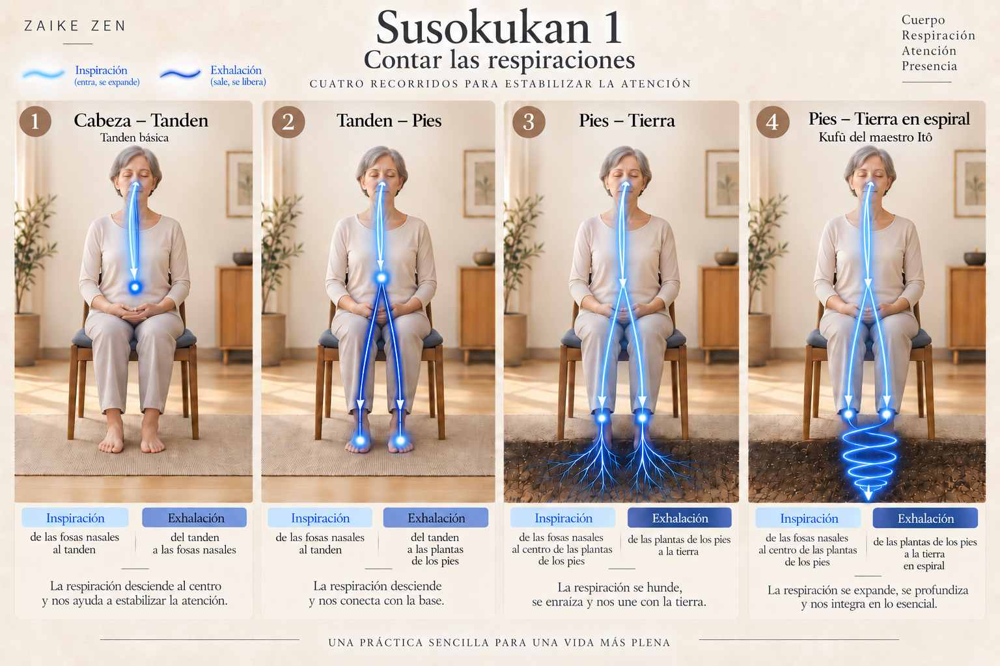

Susokukan 1
Contar las respiraciones
La práctica
Nuestra postura está ya estable y equilibrada, el cuerpo suelto y relajado, sentimos la unión de cuerpo y mente, y nos abrimos poco a poco, más y más, a la meditación. La práctica continúa con el ejercicio de los diferentes tipos de respiraciones. Como ya se ha comentado, la respiración es uno de los pilares de la meditación y, en este momento, adquiere mayor detenimiento. Hay muchos tipos de respiraciones involucradas en la práctica de la meditación.
Estos tipos de respiración parten de la respiración tanden, ya explicada, y la complementan con diferentes formas de llevar la atención hacia distintas partes del cuerpo como si sintiésemos el flujo del aire que lo recorre. Esto nos permitirá estabilizar todavía más la atención en las sensaciones corporales y, al mismo tiempo, observar los efectos de la respiración tanto en nuestro cuerpo como en nuestra mente.
La propuesta que se muestra a continuación es una síntesis que sirve de base al practicante para introducirse en diferentes tipos de respiración y que puede ser modificada por el maestro acompañante según el momento y la persona que practica.
Inicialmente cada tipo de respiración se practicará mediante series de 10 repeticiones, contando cada respiración durante la exhalación hasta completar el ciclo. Serán, de esta forma, 10 repeticiones para cada tipo de respiración. Esto nos ayudará a retener más la atención y a volver a la respiración si algún pensamiento pasa por nuestra mente. Esto es importante, si algún pensamiento distrae nuestra atención, simplemente volveremos a contar el ciclo de respiraciones en el que nos encontremos nuevamente desde el principio.
Las cuatro respiraciones

1. Cabeza → Tanden
2. Tanden → Pies
3. Pies → Tierra
4. Pies → Tierra en espiral
Tipos de respiración
1. Respiración cabeza-tanden, tanden básica
Entra el aire por las fosas nasales con la inhalación hasta el tanden y sale el aire por las fosas nasales con la exhalación. Durante cada exhalación contamos sucesivamente 1, 2, 3…hasta completar una serie de 10 respiraciones.
2. Respiración tanden-pies
Entra el aire por las fosas nasales con la inhalación hasta el tanden y, con la exhalación, se dirige hasta el centro de la planta de los pies. Durante cada exhalación contamos sucesivamente 1, 2, 3…hasta completar una serie de 10 respiraciones.
3. Respiración pies-tierra
Entra el aire por las fosas nasales con la inhalación hasta el centro de la planta de los pies y, durante la exhalación, dirigimos el aire desde la planta de los pies hacia la tierra. Durante la exhalación contamos sucesivamente 1, 2, 3…hasta completar una o varias series de 10 respiraciones.
4. Respiración pies-tierra en espiral. Kufû del maestro Itô
Entra el aire por las fosas nasales con la inhalación hasta el centro de la planta de los pies y, durante la exhalación, dirigimos el aire haciendo una espiral desde la planta de los pies hasta el centro de la tierra. Durante la exhalación contamos sucesivamente 1, 2, 3…hasta completar una o varias series de 10 respiraciones.
Progresión en la práctica
El practicante puede agregar poco a poco los diferentes tipos de respiración por el orden que se propone, cuando domine perfecta y progresivamente la respiración anterior. El entrenamiento de este tipo de respiraciones debe realizarse bajo la supervisión de un maestro acompañante y puede durar meses o años. Al exponerlas sucesivamente puede inducir al error de que cada respiración es fácilmente accesible. Es muy importante el entrenamiento gradual observando detenidamente las sensaciones internas hasta que cada tipo de respiración se automatice y ejecute sin esfuerzo alguno, evitando saltar a la siguiente sin haber profundizado lo suficiente. Otra forma de entenderlo es errónea y puede causar problemas. En caso de cualquier duda, es necesario consultar con el maestro acompañante.